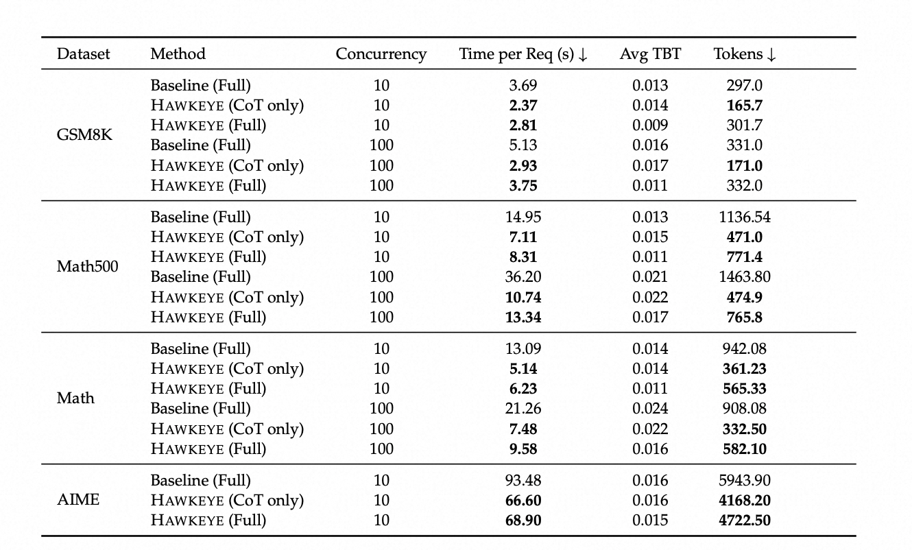

Chain-of-Thought (CoT) reasoning has demonstrated remarkable effectiveness in enhancing the reasoning abilities of large language models (LLMs). However, its efficiency remains a challenge due to the generation of excessive intermediate reasoning tokens, which introduce semantic redundancy and overly detailed reasoning steps. Moreover, computational expense and latency are significant concerns, as the cost scales with the number of output tokens, including those intermediate steps.
In this work, we observe that most CoT tokens are unnecessary, and retaining only a small portion of them is sufficient for producing high-quality responses. Inspired by this, we propose Hawkeye, a novel post-training and inference framework where a large model produces concise CoT instructions to guide a smaller model in response generation. Hawkeye quantifies redundancy in CoT reasoning and distills high-density information via reinforcement learning. By leveraging these concise CoTs, Hawkeye is able to expand responses while reducing token usage and computational cost significantly.
Our evaluation shows that Hawkeye can achieve comparable response quality using only 35% of the full CoTs, while improving clarity, coherence, and conciseness by approximately 10%. Furthermore, Hawkeye can accelerate end-to-end reasoning by up to 3.4× on complex math tasks while reducing inference cost by up to 60%.
The emergence of reasoning-capable large language models (LLMs) has recently made headlines. Equipped with Chain-of-Thought (CoT) reasoning, these models "think" by producing lengthy internal reasoning traces before generating a final response. This reasoning paradigm decomposes complex questions and applies multiple strategies to verify and refine answers, mimicking human-like problem solving. It has proven particularly effective for tasks that require fine-grained, step-by-step logical synthesis, such as mathematics and code generation.
However, such test-time compute scaling is inefficient, as a large portion of the generated "thinking" tokens is redundant. While long CoTs can improve reasoning quality, generating them during inference introduces significant overhead. For example, the OpenAI o1 model uses up to 40K tokens, whereas GPT-4o averages around 4K tokens for the same query, leading to a 10× increase in KV cache memory usage.
Hawkeye introduces model collaboration, wherein a powerful model generates concise reasoning instructions, and small models expand them into human-readable responses. The core idea behind Hawkeye's post-training is to minimize redundancy in intermediate reasoning tokens and accelerate reasoning, thereby reducing cost while enhancing CoT quality.

During inference, Hawkeye introduces a novel paradigm in which a large language model (LLM) guides smaller language models (SLMs) to generate answers based on distilled CoTs. Hawkeye achieves nearly a 50% reduction in cost and significantly faster inference without sacrificing response quality.
We observe that CoT reasoning often contains substantial redundancy due to:
To examine redundancy in Chain-of-Thought reasoning, smaller models were guided by larger models to generate CoTs for GSM8K. The CoTs were refined via LLM-assisted feedback by removing repeated, filler-like, and overly fine-grained tokens. Results indicate that 60%–80% of CoT tokens are redundant across most models.
Hawkeye employs GRPO (Group Relative Policy Optimization) to fine-tune models for compressed CoT generation. We observe that CoT density achieves an optimal trade-off between compression rate and performance when the compression rate ranges from 0.6 to 0.8 relative to the original.

The reward function is designed as:
R = EM(â, a) - λ × max(0, len(c) - 0.3 × len(c_orig))²Where:
EM(â, a): Exact match score between generated and ground truth answerslen(c): Token count of generated CoTlen(c_orig): Token count of original CoTλ: Length penalty weightHawkeye achieves comparable accuracy to baseline models while significantly reducing computational cost:

Under a concurrency level of 10, Hawkeye demonstrates inference speedups of up to 1.6×, 2.1×, and 2.5× relative to the baseline on GSM8K, MATH500, and MATH, respectively, while utilizing only 55.7%, 41.1%, and 38.3% of the original total token counts. When the concurrency is increased to 100, the speedup factors further improve to 1.8×, 3.4×, and 2.8×.
Due to the output token count saving, Hawkeye costs less up to 98.40% and 59.09% than OpenAI-o1 and DeepSeek-R1. Our evaluation shows that Hawkeye can achieve comparable response quality using only 35% of the full CoTs.
Multi-Dataset Performance:
| Task | Model | Accuracy(%) | Response Length (Tokens) |
|---|---|---|---|
| GSM8K | DeepSeek-R1-Distill-Qwen-7B | 85.65 ± 0.63 | 477.98 ± 0.89 |
| GSM8K | Hawkeye | 82.11 ± 0.48 | 413.42 ± 2.19 |
| GPQA Diamond | DeepSeek-R1-Distill-Qwen-7B | 38.72 ± 3.56 | 1975.19 ± 8.90 |
| GPQA Diamond | Hawkeye | 39.23 ± 3.10 | 2006.30 ± 2.23 |
| MATH | DeepSeek-R1-Distill-Qwen-7B | 91.47 | 751.5 |
| MATH | Hawkeye | 87.45 | 208.33 |
In this work, we introduce Hawkeye, a novel paradigm for efficient reasoning via model collaboration. Hawkeye enables a large model to generate concise and informative Chain-of-Thought (CoT) instructions, which are subsequently expanded by a smaller model to produce coherent and accurate responses. This collaborative reasoning framework significantly reduces redundancy in intermediate reasoning steps.
Extensive evaluations across multiple reasoning benchmarks (e.g., GSM8K, MATH500, AIME) demonstrate that Hawkeye achieves comparable or even improved response quality, while reducing reasoning token usage by 50%--70% and accelerating inference by up to 3×. These results suggest that combining instruction distillation with small-model generation offers a promising pathway toward scalable and cost-effective reasoning systems without sacrificing performance.
@article{she2025hawkeye,
title={Hawkeye: Efficient reasoning with model collaboration},
author={She, Jianshu and Li, Zhuohao and Huang, Zhemin and Li, Qi and Xu, Peiran and Li, Haonan and Ho, Qirong},
journal={arXiv preprint arXiv:2504.00424},
year={2025}
}